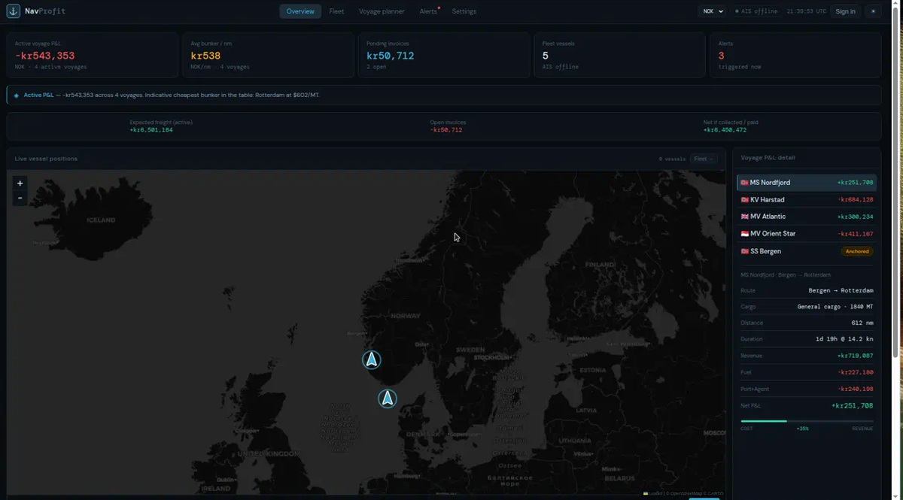

Contracts, apps, and the tooling around them.
Solidity, Flutter, Python. I like small things that are finished, and tests that try to break the thing rather than confirm it.
Currently CipherPost beta · WorldPulse · Slots
WorldPulse
Live · Sepolia
A token that pays you to give it away.
An ERC-20 whose pulse is on-chain state. Holding earns nothing; circulation, rhythm and introductions earn a capped, halving emission. Supply grows only when the money moves — a dormant epoch mints nothing at all.
navprofit
Source
Does this voyage actually make money?
Maritime voyage intelligence — live AIS vessel tracking joined to bunker prices and voyage P&L, so the economics of a route are visible while it is still running rather than after it settles.
Aether Codex
SourceAgents that read code looking for trouble.
A Python toolkit for running specialised review agents over a codebase — configurable, CLI-driven, built for working through unfamiliar systems methodically rather than by intuition.
CipherPost
Private betaMessages that stay on your device.
Local-first encrypted messaging and calling. The protocol is Signal's own libsignal rather than a hand-rolled one — the app never implements the ratchet itself. The relay holds bounded ciphertext, prekeys and delivery state; plaintext, keys and history never leave the device.
Available for build work
Contracts, tooling, and the interfaces that make either usable. I take on small, well-defined pieces and finish them.
Smart contracts
Solidity, upgradeable proxies, storage layouts that survive a migration. Tested adversarially — the WorldPulse suite exists because writing the attack first caught three real bugs in my own designs.
Interfaces and dashboards
Front ends for things that are hard to look at: chain state, live feeds, numbers that need to be trusted at a glance. Static where possible, so there is less to break.
Tooling and automation
Python and Node tooling for jobs that are currently manual. Scripts that verify their own output rather than reporting success and hoping.
Taking on small, fixed-scope work now. Tell me what you are stuck on and I will say plainly whether I am the right person for it.
Concepts
Written up, not built. Ideas I wanted on paper.
- Project Orion — a whitepaper on raising effective human capability at scale.
- Orbital Solar Network — solar CubeSats that mine while salvaging dead satellites.